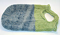
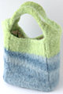
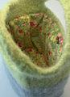
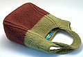

|
||
Premium Patterns Wintry Mix Mitts Love Bytes HawkeyeFree Patterns Kiddie Cadet Summerlin Ruffled Scarf Seamless DS Sock Simply Seamless Pouch Myriads of MushroomsExtras DIY Mitten Blocker Felt Patch Tutorial Yarn Dyeing Tutorial Needle Pouches Knitting Journal |
June 29, 2007 - Posted by Grace SchneblyIn The BagThe last few days here in Boston were killer!! The heat and humidity made my life a living hell, especially since our tiny air conditioner can’t cool any room in our apartment. We have to set up a tent in front of the AC and hang out in there all day just to make it through the day! It was seriously a nightmare, and I know more days like that will come soon. It has really made it hard to work on projects but I finally finished up my friends bag. She said she wanted one of these totes that was “light and summery” and in “pastels and natural” colors. This is what I came up with knitting from my stash… Project Specs I am a little ashamed at how long it took me to finish this. I finally finished yesterday ON my friends birthday! I still have to send it to her since she lives all the way across the country, so it won’t get to her until next week. This bag really should be a 2 day project; you need one day to knit and felt it, let it dry overnight, then line it the next. The second version of this bag, which I gave to my grandma last year for her birthday, I finished in two days so I know it is doable. The pattern is really simple, and goes really quickly; all but the bottom is knit in the round. It is a fast knit also because you use a double strand of worsted weight wool on size US 15 needles, the knitting really flies by! I made one of these bags as my second ever knitting project so a beginner could make this for sure. You could easily modify the pattern to make a tote of any size or do some stranded color work to make it a little more interesting. This was my first time working with Nature Wool (although I have a giant stash of it accumulated from socking up when it goes on sale). I heard that it felts well, and it does! The colors are really beautiful too, although all of the color variation in the green got lost during felting. It is also a bit strange that at the bottom of the blue section the dark and light blues came together randomly, and then half way through they started to pool and create a spiral pattern. I like it and think that it adds some character. Instead of following the instructions in the pattern which say to work a certain color for so many inches, I just knit with the blue until it ran out, and then worked in green until the bag was done. That way I don’t have to use just a tiny bit of a blue skein and I think it looks better with more of the contract color. I lined the bag using Amy Butler Charm in Celery Fairy Paisley. I am really proud of myself because everything to make this bag came from either my yarn or fabric stash and I didn’t have to buy a single thing! I love how the fabric goes perfectly with the yarn, and that print is nice and summery like my friend wanted. Sadly Amy Butler’s Charm line is now out of print, and I searched for this pattern all over online and couldn’t find it anywhere. If you want to try finding it I suggest looking at small quilt or fabric shops because they may have some left over bolts, or check on ebay. If you’re interested in how I lined it I might create a tutorial, otherwise I pretty much just made a box then hand sewed it into the bag. I really love making this pattern! I have made on for myself out of Patons Classic Wool, one for my grandma out of Cascade 220, and now this one. The one that I made for myself has to be one of my most used knits, and it always seems to get compliments when I take it out. I will definitely rely on this pattern if I need to make a last minute gift. |
   Recent ReviewsRecent Posts
 Our Favorites
|
| © 2007 KathrynIvy.com | ||
{kind=link}
{kind=link}
{kind=link}
{kind=link}